Reaching our goal of 2,000 will ensure Beanlandia thrives!
Be part of building something special in New Orleans. A unique community-centered space.
New Orleans, Louisiana
Working to mobilize our parade as a force for good — bringing people together in pursuit of Loving New Orleans.
What's Coming Up
From Cajun dance nights to krewe gatherings, there's always something happening in Beanlandia.
Thursday, Friday & Sunday — November 12, 13 & 15.
Beanlandia · 3300 Royal Street
Saturday · 10am — with the Treme Brass Band and the Mystic 7 Sisters.
Monday nights, beginning November 16 — our costume-making nights for the parade.
Beanlandia · 3300 Royal Street
Who We Are
We believe there are two powerful paths to a meaningful life: creating culture and being active in your community. Bringing folks together also builds a stronger safety net for our city.
We began as a small walking parade in 2008. During COVID, we became a true force for good — creating innovative efforts that supported thousands of New Orleanians, generating over a million dollars in jobs for musicians and culture bearers, and sparking joy throughout the city when the city needed it most. Who knew all that could happen from a bean parade?!?
After that experience, we wanted to create something long-term, something that would help us continue to "love" on New Orleans. In November 2021, we embarked on building a community space, Beanlandia. A vibrant cultural neighborhood anchor that invites us all to pursue a meaningful life together — through programming for children and adults, a stronger community safety net, and the enduring belief that New Orleans is a Team Sport.
Parade with Us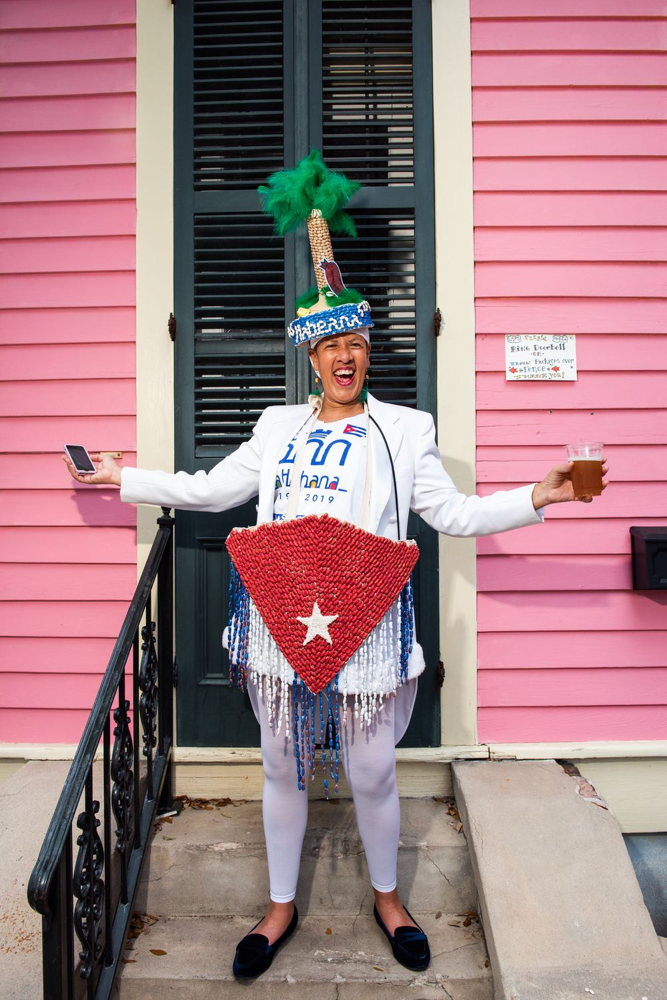
The Why
New Orleans is a special place! It's our responsibility to love it back. That means building community and working together to make it better. We exist to build a network of folks who love New Orleans and are willing to do something about it.
We do this by bringing people together to share interests, create culture, and support one another. That process builds social cohesion — which is a key ingredient in fostering a stronger community and building a safety net.
Creating and celebrating cultural experiences at Beanlandia and around New Orleans
Workshops, history lectures, beaning sessions, and music classes happen at Beanlandia
Come enjoy building community through weekly events, dancing, crafting, gardening, and more
Lundi Gras 2027 · Monday, February 8
The Krewe of Red Beans parades every Lundi Gras — the Monday before Mardi Gras. It's the heart of everything we do. If you're a member, you can walk with us.
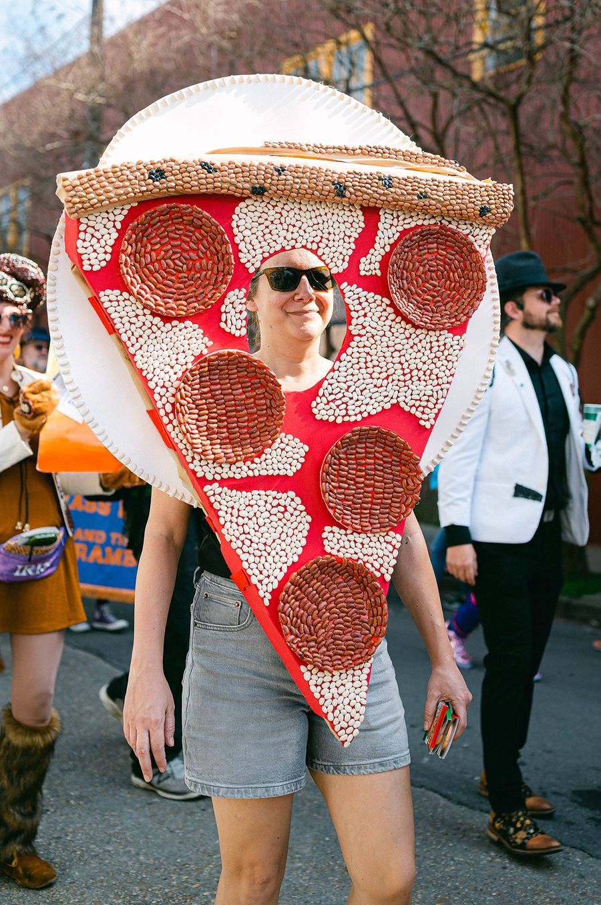
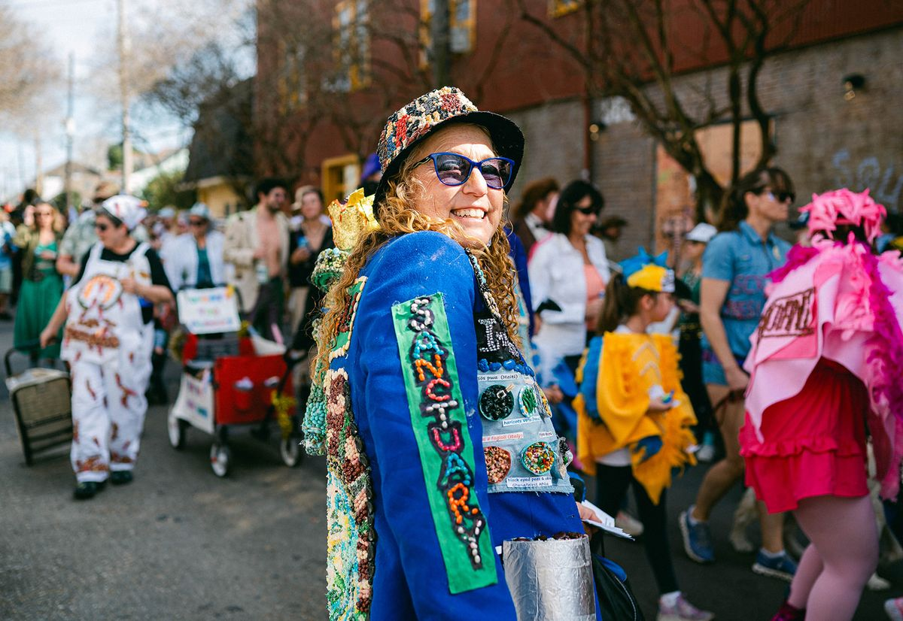
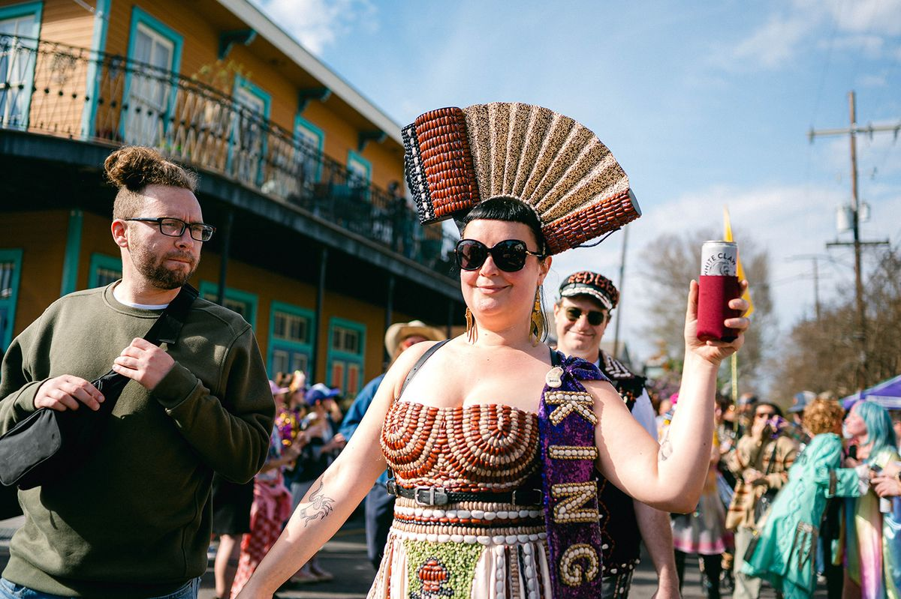
Lundi Gras 2025 · Photos by Katie Sikora
Become a Beanlandia member and you can parade with us! Beanlandia membership is pay-what-you-like-per-month, $5 minimum ($15 suggested). Become a member →
Beaning season starts Monday nights at Beanlandia, beginning November 16. Come make your costume, meet fellow paraders, and learn from our lead bean artists.
$50 minimum, $125 suggested per adult. Kids free! Dues help cover the cost of the parade, supplies, and Lundi Gras celebrations. It takes a village to make a Bean Parade happen!
3300 Royal Street
When the last bell rings, Beanlandia opens its doors. Our after school programs give New Orleans kids a place to build things, learn real skills, and spend the afternoon with adults who take their ideas seriously.
Our first after school program
The Krewe of Red Beans is excited to launch BeanBots, a casual robotics club for young people interested in building, coding, tinkering, and learning how robots work.
BeanBots is not a competitive robotics team. Instead, it will be a welcoming place for students of all experience levels to explore robotics at their own pace. Together, we’ll build and program a REV Robotics Classbot, learning everything from motors, gears, wiring, and mechanical design to coding, problem-solving, and driving the finished robot.
BeanBots is free for every family. A gift helps keep it that way.
Meet the BeanBots
BeanBots at work
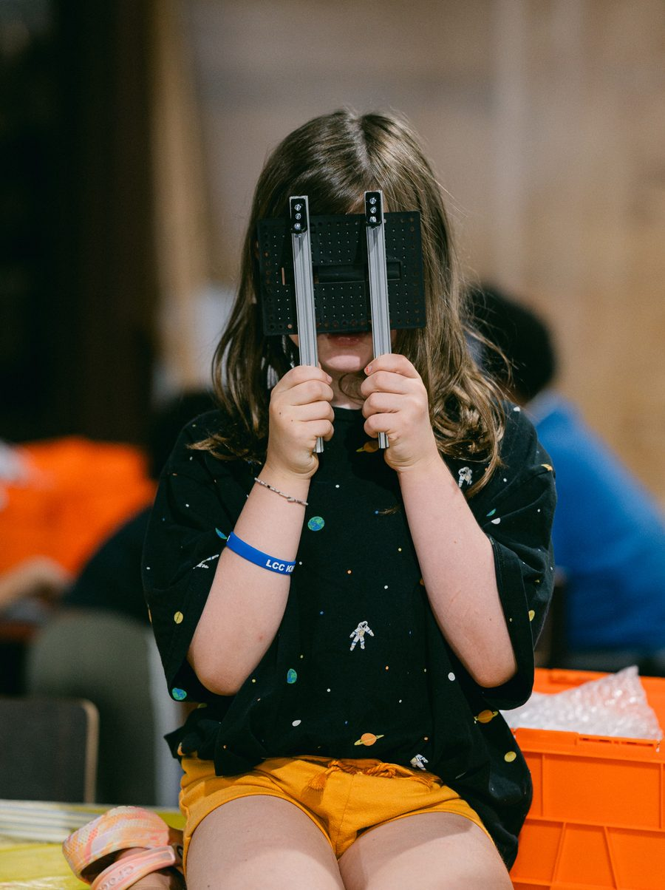
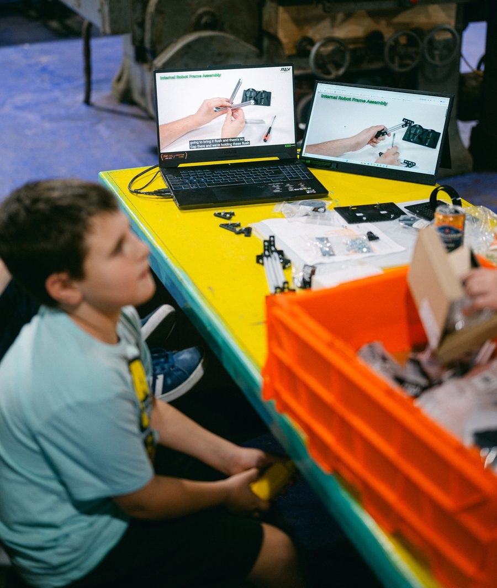
Beanlandia
Beanlandia isn't just the home of the Krewe of Red Beans — it's a gathering place for New Orleans culture in all its forms. We open our doors to other organizations, traditions, and communities who share our belief that culture is worth protecting and celebrating.
The Krewe of Mayahuel — a Mexican parade krewe rooted in Día de los Muertos tradition — calls Beanlandia home. Their annual parade is a testament to what New Orleans does best: welcoming, honoring, and celebrating the cultures that make this city unlike any other on earth. It's one of our most favorite things.
This is what New Orleans is a Team Sport looks like in practice.
Krewe of Mayahuel — Día de los Muertos Parade
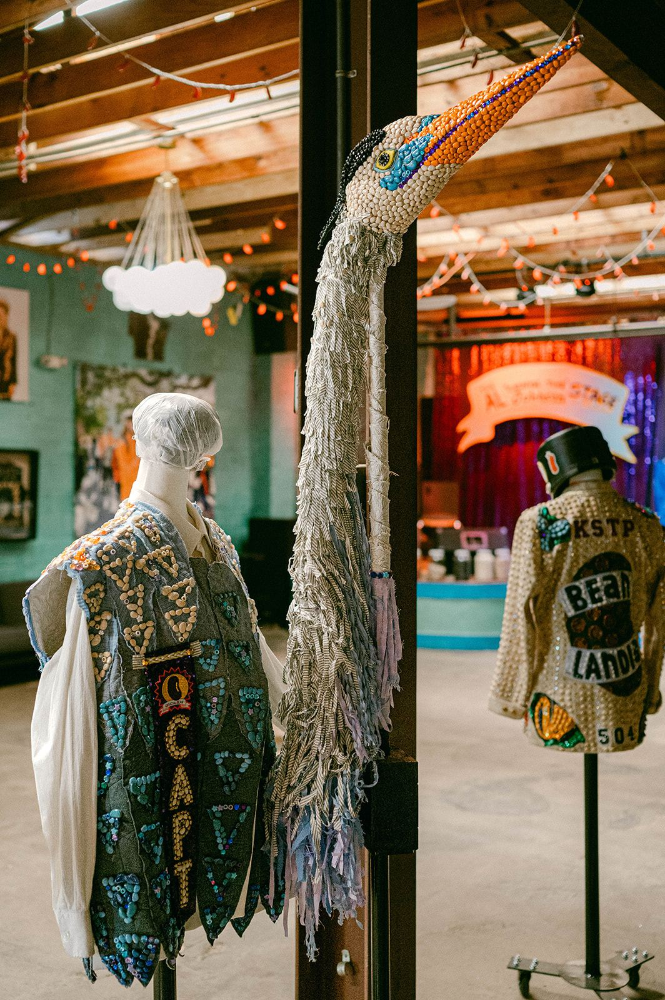
3300 Royal Street
Have you visited a bean museum?
(It's not really about beans, but rather, a way to learn about modern New Orleans carnival culture.) Come journey with us into the "beaning of life."
Bean Tour Admission
Payment is collected at the door. Every dollar goes directly back into community programming — Bean Camp, La Louisiane, tree planting, and our safety net.
Google Reviews
"Wow. Mind blown. What an unexpected, serendipitous, delightful surprise."
Google Review"I fell in love immediately. The decor and the rich feeling of community run deep."
Google Review"What a truly pure and heartwarming experience. I love everything about this."
Google Review"This place rules. Incredibly welcoming ... Worth the visit."
Google Review"A beautiful insight into how New Orleans supports itself, its people and its culture while having a good time. Totally worth a visit."
Google Review"Very unique experience to learn about krewe traditions and to see some super creative costumes. A real slice of NOLA life."
Google ReviewJoin Us
Participating in culture and community is one of the most meaningful things you can do with your time. Our goal is 2,000+ members — folks who are part of building and sustaining one of the most unique spaces in New Orleans, Beanlandia.
Membership is open to everyone. New Orleans locals, Louisiana neighbors, and friends of the city from anywhere in the world. Pay what you like — $5, $15, or more. Every member helps us grow our staff, fund our programs, work on resilience, build community, and keep the music playing.
$5/mo+
Suggested $15/month. Any amount gets you full membership.
$25/mo
Help us sustain Bean Camp, La Louisiane, and tree planting year-round.
$100/mo
Invest in making New Orleans an even better place!
Give Back
Choose a cause below — every dollar goes directly to the people and projects that keep this city's culture alive and its community strong.
Public art
A permanent mural honoring the Louisiana Native Guards, on the wall where they mustered in 1862. Give $100 or more and your name goes on the donor sign beside it.
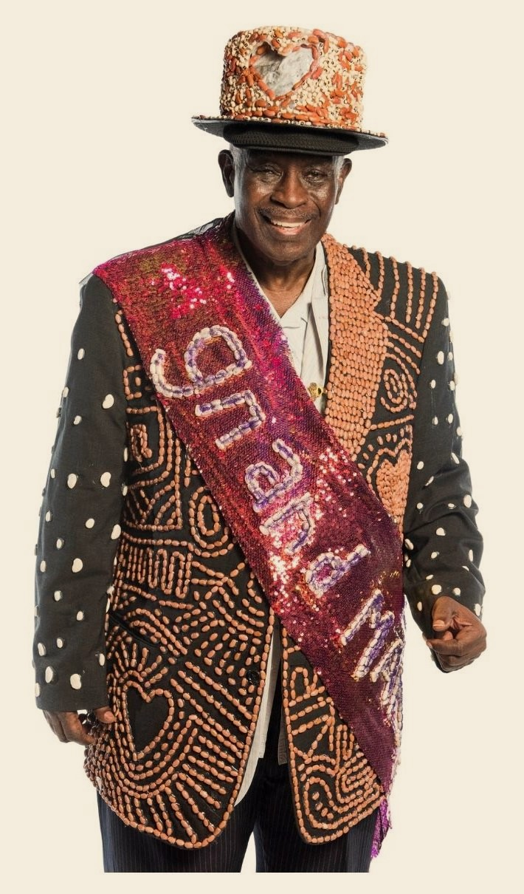
Carnival legend
A New Orleans legend who gave us joy for decades. Let's show up for him now.
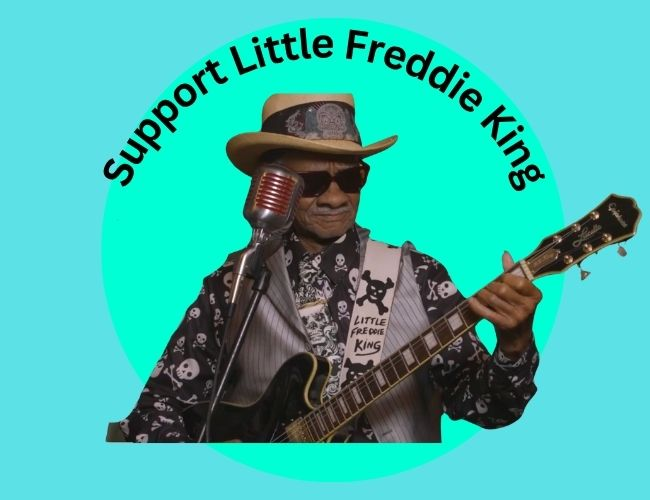
Blues legend
One of the last great New Orleans bluesmen. Help us take care of our own.
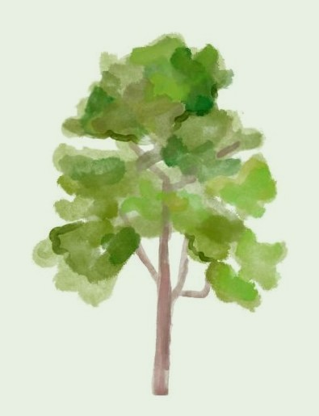
Neighborhood canopy
The Bywater has one of the lowest canopy rates in the city. A few dollars a month transforms our neighborhood.
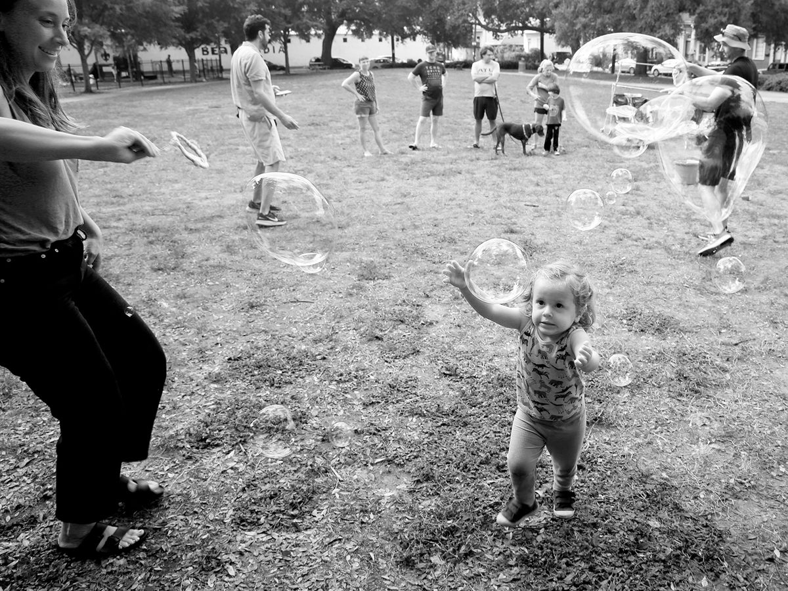
Playground safety
Testing found elevated lead in the soil at Markey Park playground. Help us remediate it so kids can play safely.